INTRODUCTION
Click here to view code
The parents of the learned child
(His father and his mother)
Were utterly aghast to note
The facts he would at random quote
On creatures curious, rare and wild;
And wondering, asked each other:
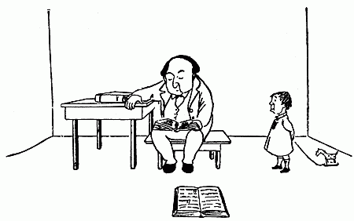
"An idle little child like this,
How is it that he knows
What years of close analysis
Are powerless to disclose?
Our brains are trained, our books are big,
And yet we always fail
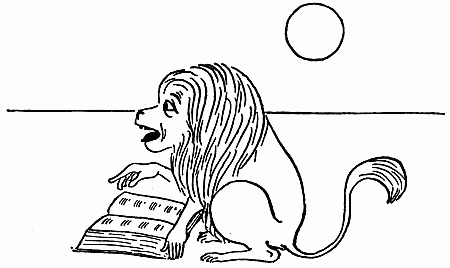
To answer why the Guinea-pig
Is born without a tail.
Or why the Wanderoo[A] should rant
In wild, unmeaning rhymes,

Whereas the Indian Elephant
Will only read The Times.

Perhaps he found a way to slip
Unnoticed to the Zoo,
And gave the Pachyderm a tip,
Or pumped the Wanderoo.
Or even by an artful plan
Deceived our watchful eyes,
And interviewed the Pelican,
Who is extremely wise."

"Oh! no," said he, in humble tone,
With shy but conscious look,
"Such facts I never could have known
But for this little book."
FOOTNOTE: [A] Sometimes called the "Lion-tailed or tufted Baboon of Ceylon."
The Python
Click here to view code

A Python I should not advise,—
It needs a doctor for its eyes,
And has the measles yearly.

However, if you feel inclined
To get one (to improve your mind,
And not from fashion merely),
Allow no music near its cage;
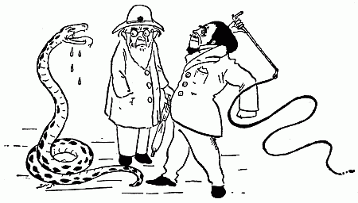
And when it flies into a rage
Chastise it, most severely.
 [214]
[214]
I had an aunt in Yucatan
Who bought a Python from a man
And kept it for a pet.
She died, because she never knew
These simple little rules and few;—

The Snake is living yet.
The Welsh Mutton
Click here to view code
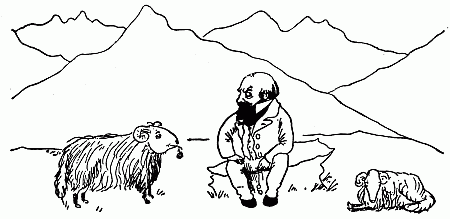
The Cambrian Welsh or Mountain Sheep
Is of the Ovine race,
His conversation is not deep,
But then—observe his face!
The Porcupine
Click here to view code

What! would you slap the Porcupine?
Unhappy child—desist!
Alas! that any friend of mine
Should turn Tupto-philist.[B]
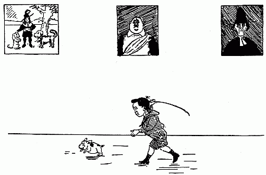
To strike the meanest and the least
Of creatures is a sin,

How much more bad to beat a beast
With prickles on its skin.
The Scorpion
Click here to view code
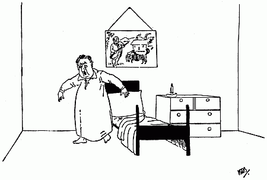
Out of bed
The Scorpion is as black as soot,
He dearly loves to bite;
He is a most unpleasant brute
To find in bed, at night.
The Crocodile
Click here to view code
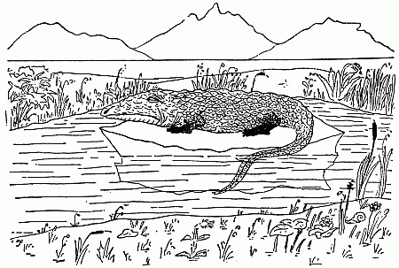
Whatever our faults, we can always engage
That no fancy or fable shall sully our page,
So take note of what follows, I beg.
This creature so grand and august in its age,
In its youth is hatched out of an egg.
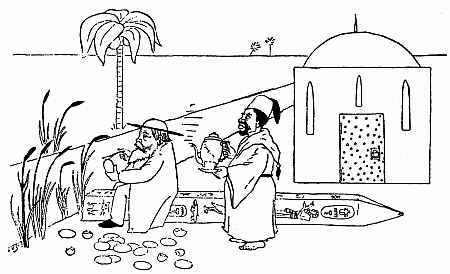
And oft in some far Coptic town
The Missionary sits him down
To breakfast by the Nile:
The heart beneath his priestly gown
Is innocent of guile;
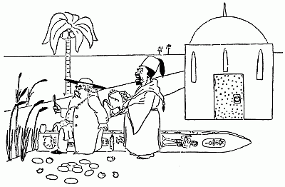
When suddenly the rigid frown
Of Panic is observed to drown
His customary smile.
Why does he leap

Why does he start and leapamain,

And scour the sandy Libyan plain
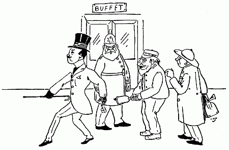
Like one that wants to catch a train,
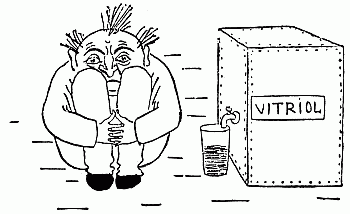
Or wrestles with internal pain?

Because he finds his egg contain—
Green, hungry, horrible and plain—
An Infant Crocodile.
The Vulture
Click here to view code

The Vulture eats between his meals,
And that's the reason why

He very, very rarely feels
As well as you and I.
His eye is dull, his head is bald,
His neck is growing thinner.
Oh! what a lesson for us all
To only eat at dinner!
The Bison
Click here to view code

The Bison is vain, and (I write it with pain)
The Door-mat you see on his head

Is not, as some learned professors maintain,
The opulent growth of a genius' brain;
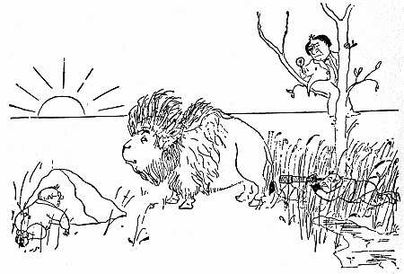
But is sewn on with needle and thread.
The Viper
Click here to view code
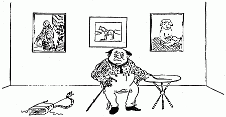
Yet another great truth I record in my verse,
That some Vipers are venomous, some the reverse;
fact you may prove if you try,
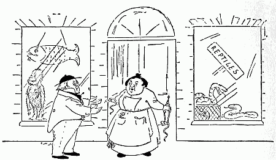
By procuring two Vipers, and letting them bite;

With the first you are only the worse for a fright,

But after the second you die.
The Llama
Click here to view code

The Llama is a woolly sort of fleecy hairy goat,
With an indolent expression and an undulating throat
Like an unsuccessful literary man.
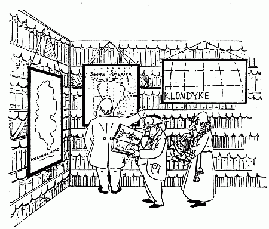
And I know the place he lives in (or at least—I think I do)
It is Ecuador, Brazil or Chili—possibly Peru;
You must find it in the Atlas if you can.
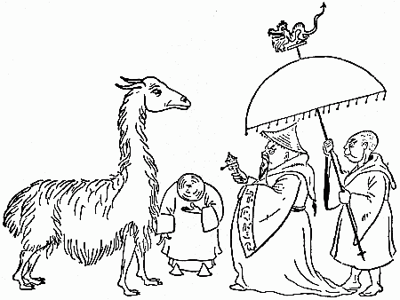
The Llama of the Pampasses you never should confound
(In spite of a deceptive similarity of sound)
With the Lhama who is Lord of Turkestan.
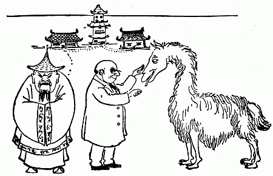
For the former is a beautiful and valuable beast,
But the latter is not lovable nor useful in the least;
And the Ruminant is preferable surely to the Priest
Who battens on the woful superstitions of the East,
The Mongol of the Monastery of Shan.
The Chamois
Click here to view code
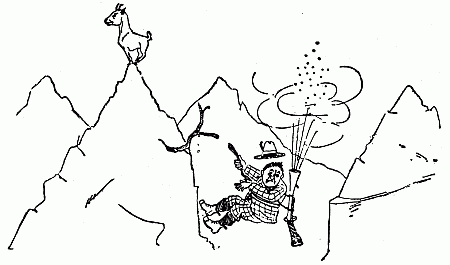
The Chamois inhabits
Lucerne, where his habits
(Though why I have not an idea-r)
Give him sudden short spasms
On the brink of deep chasms,
And he lives in perpetual fear.
The Frozen Mammoth
Click here to view code

This Creature, though rare, is still found to the East
Of the Northern Siberian Zone.
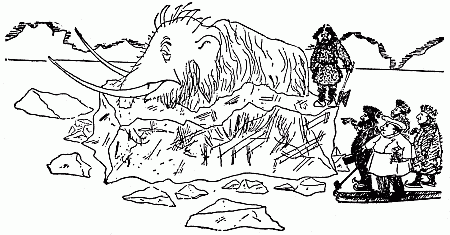
It is known to the whole of that primitive group
That the carcass will furnish an excellent soup,
Though the cooking it offers one drawback at least
(Of a serious nature I own):

If the skin be but punctured before it is boiled,
Your confection is wholly and utterly spoiled.

And hence (on account of the size of the beast)
The dainty is nearly unknown.
The Microbe
Click here to view code

The Microbe is so very small
You cannot make him out at all,
But many sanguine people hope
To see him through a microscope.
His jointed tongue that lies beneath
A hundred curious rows of teeth;
His seven tufted tails with lots
Of lovely pink and purple spots,

On each of which a pattern stands,
Composed of forty separate bands;
His eyebrows of a tender green;
All these have never yet been seen—
But Scientists, who ought to know,
Assure us that they must be so. . . .
Oh! let us never, never doubt
What nobody is sure about!